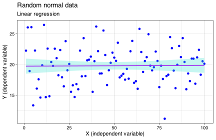

![]()
| The sparrow wing data from Zar (1999). | |
|---|---|
| Age (days) | Wing length (cm) |
| 3 | 1.4 |
| 4 | 1.5 |
| 5 | 2.2 |
| 6 | 2.4 |
| 8 | 3.1 |
| 9 | 3.2 |
| 10 | 3.2 |
| 11 | 3.9 |
| 12 | 4.1 |
| 14 | 4.7 |
| 15 | 4.5 |
| 16 | 5.2 |
| 17 | 5.0 |
9. Simple linear regressions
The shallow end in the ocean of regression models
In this Chapter
- The simple linear regression
- The model coefficients
- Graphing linear regressions
- Confidence intervals
- Prediction intervals
- Model fit diagnostics
Cheatsheet
Find here a Cheatsheet on statistical methods.
Slides with additional information about correlations
Tasks to complete in this Chapter
- Task G 1-5
At a glance
Regression analysis is used to model and analyse the relationship between a dependent variable (response) and one or more independent variables (predictors). There is an expectation that one variable depends on or is influenced by the other. The data requirements for a regression analysis are:
Continuous dependent and independent variables Both the dependent variable and independent variables should be measured on a continuous scale (e.g., height, mass, light intensity).
Linear relationship There should be a linear relationship between the dependent variable and independent variables. This can be visually assessed using scatter plots. If the relationship is not linear, you may need to consider non-linear regression or apply a data transformation.
Independence of observations The observations should be independent of each other. In the case of time series data or clustered data, this assumption may be violated, requiring specific regression techniques to account for the dependence (e.g., time series analysis, mixed-effects models).
Homoscedasticity The variance of the residuals (errors) should be constant across all levels of the independent variables. If the variances are not constant (heteroscedasticity), you may need to consider weighted least squares regression or other techniques to address this issue.
Normality of residuals The residuals should be approximately normally distributed. This can be assessed using diagnostic plots, such as a histogram of residuals or a Q-Q plot. If the residuals are not normally distributed, you may need to consider data transformations or more robust regression techniques like GLMs.
No multicollinearity This applies to multiple regression, which will not be covered in BCB744. Independent variables should not be highly correlated with each other, as this can cause issues in estimating the unique effect of each predictor. You can assess multicollinearity using variance inflation factors (VIFs) or correlation matrices. If multicollinearity is an issue, you may need to consider removing or combining highly correlated variables or using techniques like ridge regression or principal component analysis.
Random sampling The data should be obtained through random sampling or random assignment, ensuring that each observation has an equal chance of being included in the sample.
Introduction to regressions
A linear regression, or model, shows the relationship between a continuous dependent (response) variable and one or more independent variables (drivers), at least one of which must also be continuous. It helps us understand how a change in the independent variable(s) is responsible for a change in the dependent variable. Linear models therefore imply a causal relationship between variables, and we say that the response, \(X\), is a function of \(Y\). Causality is a major distinguishing feature between regression and correlation (Chapter 10), as the latter makes no such a claim. A linear model assumes that the relationship between the variables is linear, meaning that it is represented by a straight line. Linear regression is used for prediction, inference, and modelling purposes.
What it means ‘to model’
In statistics, ‘to model’ refers to the process of constructing a mathematical or statistical representation of a real-world phenomenon or system. The goal of modelling is to capture the essential features of the system or phenomenon in a simplified and structured form that can be analysed and understood.
A model can take many forms, such as an equation, a graph, a set of rules, or a simulation. The choice of model depends on the nature of the phenomenon being studied and the purpose of the analysis. For example, a linear regression model can be used to model the relationship between two continuous variables, while a logistic regression model can be used to model the probability of a binary outcome.
The process of modelling involves making assumptions about the relationship between variables, choosing an appropriate model structure, and estimating the model parameters based on data. Once a model has been constructed and estimated, it can be used to make predictions, test hypotheses, and gain insight into the underlying mechanisms of the phenomenon being studied.
Other variations of regressions you’ll encounter in biology include multiple regression, logistic regression, non-linear regression (such as the Michaelis-Menten model you learned about in BDC223), generalised linear models, generalised additive models, regression trees, and other. In this Chapter we will limit our encounters with regression models to simple linear regressions.
An example dataset
We use a dataset about sparrow wing length as a function of age. A graph of a linear regression model typically consists of a scatter plot with each point representing a pair of \(X_{i}\) and \(Y_{i}\) values with a best-fit line that represents the linear relationship between \(X\) and \(Y\) (Figure 1). The line is generated by estimating \(\beta\) and \(\alpha\) of the linear regression model using the method of least squares.
The fitted line shows of the relationship between the variables and offer an easy way to make predictions about the dependent variable for a given value of the independent variable. As we shall see later, we can also plot the residuals, which are the differences between the observed data points, \(Y_{i}\), and the predicted values of the dependent variable, \(\hat{Y_{i}}\), against the independent variable to check for any patterns or trends that may indicate problems with the linear regression model.

The simple linear regression
A simple linear regression relates one continuous dependent variable to a continuous independent variable. The linear regression equation is already known to you (Equation 1).
The linear regression: \[Y_{i}=\beta \cdot X_{i}+\alpha+\epsilon \tag{1}\]
where \(X_i\) and \(Y_i\) is an individual data point, \(\alpha\) and \(\beta\) are the population parameters for the intercept and slope, respectively, and \(\epsilon\) is the residual.
Coefficients are population parameters (statistics) that describe two properties of the linear line that best fits a scatter plot between a dependent variable and the independent continuous variables. The dependent variable, \(Y_{1..i}\), may also be called the response variable or predictand, and the independent variable, \(X_{1..i}\), the instrumental variable or predictor. The regression model consists of an intercept term, \(\alpha\), that describes where the fitted line starts and intercepts with the y-axis, and the slope, \(\beta\), of the line (Equation 1). The amount of variation not explained by a linear relationship of \(Y\) on \(X\) is termed the residual variation, or simply the residuals or the error term, and in the above equation it is indicated by \(\epsilon\).
The regression parameters \(\alpha\) and \(\beta\) are determined by minimising the error sum of squares of the error term, \(\epsilon\). It allows us to predict new fitted values of \(Y\) based on values of \(X\). The error sum of squares is calculated according to Equation 2. Figure 2 provides an animation demonstrating the principle of minimising the error sum of squares (called the method of least squares).
The error sum of squares: \[error~SS=\sum_{i=1}^{n}(Y_{i}-\hat{Y}_{i})^{2} \tag{2}\]
The sparrow data set’s linear model is represented as:
\[wing_{n}=\beta \cdot age_{n}+\alpha+\epsilon\]
When we perform a linear regression in R, it will output the model and the coefficients:
Call:
lm(formula = wing ~ age, data = sparrows)
Residuals:
Min 1Q Median 3Q Max
-0.30699 -0.21538 0.06553 0.16324 0.22507
Coefficients:
Estimate Std. Error t value Pr(>|t|)
(Intercept) 0.71309 0.14790 4.821 0.000535 ***
age 0.27023 0.01349 20.027 5.27e-10 ***
---
Signif. codes: 0 '***' 0.001 '**' 0.01 '*' 0.05 '.' 0.1 ' ' 1
Residual standard error: 0.2184 on 11 degrees of freedom
Multiple R-squared: 0.9733, Adjusted R-squared: 0.9709
F-statistic: 401.1 on 1 and 11 DF, p-value: 5.267e-10The summary output shows six components:
Call The regression model as specified in the function call.
Residuals Provide a quick view of the distribution of the residuals. The residuals will always have a mean of zero. Therefore, the median should not be far from zero, and the minimum and maximum should be roughly equal in absolute value.
Coefficients The various regression coefficients—i.e. \(\alpha\) and \(\beta\) in a simple linear model with one predictor—and their statistical significance. Predictor variables that are significantly associated to the outcome variable are marked by stars.
Insight into the model accuracy is given by the Residual standard error (RSE), R-squared (R2) and the F-statistic. These are metrics that are used to check how well the overall model fits our data.
We will look at some of these components in turn.
The model coefficients
The intercept
The intercept (more precisely, the \(y\)-intercept, \(\alpha\)) is the best estimate of the starting point of the fitted line on the left hand side of the graph where it crosses the \(y\)-axis. You will notice that there is also an estimate for the standard error of the estimate for the intercept.
There are several hypothesis tests associated with a simple linear regression. All of them assume that the residual error, \(\epsilon\), in the linear regression model is independent of \(X\) (i.e. nothing about the structure of the error term can be inferred based on a knowledge of \(X\)), is normally distributed, with zero mean and constant variance. We say the residuals are i.i.d. (independent and identically distributed, which is a fancy way of saying they are random).
One of the tests looks at the significance of the intercept, i.e. it tests the H0 that \(\alpha=0\). Is the value of the \(y\)-intercept zero? Rejecting this H0 causes the alternate hypothesis of \(\alpha \neq 0\) to be accepted. This test is automatically performed when fitting a linear model in R and asking for a summary of the regression object, but it is insightful and important to know that the test is simply a one-sample t-test. In the sparrows data, this statistic is in the Coefficients table in the row indicated by (Intercept) under the Pr(>|t|) column.
The regression coefficient
The interpretation of the regression coefficient, \(\beta\), is simple. For every one unit of change in the independent variable (here waiting time) there is a corresponding average change in the dependent variable (here the duration of the eruption). This is the slope or gradient, and it may be positive or negative. In the example the slope of the line is denoted by the value 0.27 \(cm.day^{-1}\) in the column termed Estimate and in the row called age (the latter name will of course depend on the name of the response column in your dataset). The coefficient of determination (see Section 7.2) multiplies the response variable to produce a prediction of the response based on the slope of the relationship between the response and the predictor. It tells us how much one unit in change of the independent variable determines the corresponding change in the response variable. There is also a standard error for the estimate.
The second hypothesis test performed when fitting a linear regression model concerns the regression coefficient. It looks for whether there is a significant relationship (slope) of \(Y\) on \(X\) by testing the H0 that \(\beta=0\). As before, this is also simply a one-sample t-test. In the regression summary the probability associated with this test is given in the Coefficients table in the column called Pr(>|t|) in the row age. In the sparrows data, the p-value associated with wing is less than 0.05 and we therefore reject the H0 that \(\beta=0\). So, there is a significant linear relationship of eruption duration on the waiting time between eruptions.
Residuals
The regression model’s residuals are the differences between the observed values, \(Y_{i}\) and the the fitted (predicted) values, \(\hat{Y_{i}}\).
Residuals are an important diagnostic tool for linear regression and many other models. If the residuals are randomly distributed around zero, it indicates that the model is a good fit for the data. However, if the residuals show a pattern or trend, such as a curve, S-, or U-shape, it may indicate that the model is not a good fit for the data and that additional variables or a more complex model may be needed.
The residuals also tell if if there are violations of assumptions, such as departures from normality or that the variances are heteroscedastic. If the assumptions are not met the the model’s validity is brought into question. Additionally, outliers in the residuals can help to identify influential observations that may be driving the results of the regression analysis.
Overall model accuracy
There are a few things that tell us about the overall model fit. The \(\beta\) and \(\alpha\) of a linear regression model provide information about the relationship between the independent and dependent variables, and the overall level of the dependent variable when the independent variable is zero. However, there are other insights about the suitability of the model to be had.
Residual standard error (RSE) and root mean square error (RMSE)
The residual standard error (RSE) is a measure of the average amount that the response variable deviates from the regression line. It is calculated as the square root of the residual sum of squares divided by the degrees of freedom (Equation 3).
The RSE: \[RSE = \sqrt{\frac{\sum_{i=1}^{n}(Y_i-\hat{Y}_i)^2}{n-2}} \tag{3}\]
where \(y_i\) represents the observed value of the dependent variable for the \(i\)-th observation, \(\hat{y}_i\) represents the predicted value of the dependent variable for the \(i\)-th observation, and n is the number of observations in the sample.
The root mean square error (RMSE) is a similar measure, but it is calculated as the square root of the mean of the squared residuals. It is a measure of the standard deviation of the residuals (Equation 4).
The RMSE: \[RMSE = \sqrt{\frac{1}{n}\sum_{i=1}^{n}(Y_i-\hat{Y}_i)^2} \tag{4}\] where the model components are as in Equation 3.
RSE and RMSE are similar but different. There is a small difference in how they are calculated. The RSE takes into account the degrees of freedom which becomes important when models with different numbers of variables are compared. The RMSE is more commonly used in machine learning and data mining, where the focus is on prediction accuracy rather than statistical inference.
Both the RSE and RMSE provide information about the amount of error in the model predictions, with smaller values indicating a better fit. However, both may be influenced by outliers or other sources of variability in the data. Use a variety of means to assess the model fit diagnostics.
R-squared (R2)
The coefficient of determination, the \(R^{2}\), of a linear model is the quotient of the variances of the fitted values, \(\hat{y_{i}}\), and observed values, \(y_{i}\), of the dependent variable. If the mean of the dependent variable is \(\bar y\), then the \(R^{2}\) is as shown in Equation 5.
The R2: \[R^{2}=\frac{\sum(\hat{Y_{i}} - \bar{Y})^{2}}{\sum(Y_{i} - \bar{Y})^{2}} \tag{5}\]

Simply put, the \(R^{2}\) is a measure of the proportion of the variation in the dependent variable that is explained (can be predicted) by the independent variable(s) in the model. It ranges from 0 to 1, with a value of 1 indicating a perfect fit (i.e. a scatter of points to denote the \(Y\) vs. \(X\) relationship will all fall perfectly on a straight line). It gives us an indication of how well the observed outcome variable is predicted by the observed influential variable, and in the case of a simple linear regression, that the geometric relationship of \(Y\) on \(X\) is a straight line. For example, in Figure 3 there is absolutely no relationship of \(y\) on \(x\). Here, the slope is 0.001 and the \(R^{2}\) is 0.
Note, however, that a high \(R^{2}\) does not necessarily mean that the model is a good fit; it may also suggest that the model is unduly influenced by outliers or the inclusion of irrelevant variables. Expert knowledge will help with the interpretation of the \(R^{2}\).
Regressions may take on any relationship, not only a linear one. For example, there are parabolic, hyperbolic, logistic, exponential, etc. relationships of \(Y\) on \(X\), and here, too, does \(R^{2}\) tell us the same thing. If we assume that the samples were representatively drawn from a population (i.e. the sample fully captures the relationship of \(Y\) on \(X\) that is present in the entire population), the \(R^{2}\) will represent the relationship in the population too.
In the case of our sparrows data, the \(R^{2}\) is 0.973, meaning that the proportion of variance explained is 97.3%; the remaining 2.7% is not (yet) accounted for by the linear relationship. Adding more predictors into the regression (i.e. a multiple regression) might consume some of the unexplained variance and increase the overall \(R^{2}\).
Sometimes you will also see something called the adjusted \(R^{2}\). This is a modified version of \(R^{2}\) that takes into account the number of independent variables in the model. It penalises models that include too many variables that do not improve the fit. Generally this is not something to be too concerned with in linear models that have only one independent variable, such as the models seen in this Chapter.
F-statistic
The F-statistic (or F-value) is another measure of the overall significance of the model. It is used to test whether at least one of the independent variables in the model has a non-zero coefficient, indicating that it has a significant effect on the dependent variable.
It is calculated by taking the ratio of the mean square regression (MSR) to the mean square error (MSE) (Equation 6). The MSR measures the variation in the dependent variable that is explained by the independent variables in the model, while the MSE measures the variation in the dependent variable that is not explained by the independent variables.
Calculating the F-statistic: \[MSR = \frac{\sum_{i=1}^{n}(\hat{Y}_i - \bar{Y})^2}{1}\] \[MSE = \frac{\sum_{i=1}^{n}(Y_i - \hat{Y}_i)^2}{n-2} \] \[F = \frac{MSR}{MSE} \tag{6}\]
where the model components are as in Equation 3.
If the F-statistic is large and the associated p-value is small (typically less than 0.05), it indicates that at least one of the independent variables in the model has a significant effect on the dependent variable. In other words, the H0 that all the independent variables have zero coefficients can be rejected in favour of the Ha that at least one independent variable has a non-zero coefficient.
Note that a significant F-statistic does not necessarily mean that all the independent variables in the model are significant. Additional diagnostic tools, such as individual t-tests and residual plots, should be used to determine which independent variables are significant and whether the model is a good fit for the data.
Fortunately, in this Chapter we will encounter linear regressions with only one independent variable. The situation where we deal with multiple independent variables is called multiple regression. We will encounter some multiple regression type models in Quantitative Ecology.
Task G
- Examine the content of the regression model object
eruption.lm. Explain the meaning of the recognisable (because they were discussed in the Chapter) components within, and tell us how they relate to the model summary produced bysummary(eruption.lm). - Using the values inside of the model object, write some R code to show how you can reconstruct the observed values for the dependent variable from the residuals and the fitted values.
- Fit a linear regression through the model residuals (use
eruptions.lm). Explain your findings. - Similarly, fit a linear regression through the the fitted values. Explain.
Confidence interval for linear regression
Confidence intervals (CI) are used to estimate the range of values within which the true value of a population parameter is likely to fall with a certain degree of confidence. Typically, in biology we use a 95% confidence interval. Confidence intervals around a linear regression model can be calculated for the intercept and slope coefficients, as well as for the predicted values of the dependent variable.
The confidence interval for the slope coefficient represents the range of likely values for the true slope of the linear relationship between the independent and dependent variables, given the data and the model assumptions. A confidence interval that does not include zero indicates that the slope coefficient is statistically significant at a given level of confidence, meaning that there is strong evidence of a non-zero effect of the independent variable on the dependent variable. In this case we do not accept the H0 that states the \(\beta\) is no different from zero.
The confidence interval for the predicted values of the dependent variable represents the range of likely values for the true value of the dependent variable at a given level of the independent variable. This can be useful for assessing the precision of the predictions made by the linear regression model, and for identifying any regions of the independent variable where the predictions are less reliable.
Again we have to observe the assumption of i.i.d. as before. For a given value of \(x\), the 95% confidence interval around the mean of the observed dependent variable, \(\bar{Y}\), can be obtained as follows:
pred.val <- data.frame(age = c(80))
predict(sparrows.lm, pred.val, interval = "confidence")So, the 95% confidence interval of the mean eruption duration at a waiting time of 80 minutes is from 4.105 and 4.248 minutes.
Prediction interval for linear regression
Prediction intervals serve different purposes from confidence intervals, and they are also calculated differently. A prediction interval is used to estimate the range of likely values for a new (future) observation of the dependent variable, given a specific value of the independent variable. It takes into account both the variability of the dependent variable around the predicted mean response, as well as the uncertainty in the estimated coefficients of the model. Prediction intervals are wider than confidence intervals, as they account for the additional uncertainty due to the variability of the dependent variable. As always, we observe that \(\epsilon\) is i.i.d..
The way we do this is similar to finding the confidence interval:
pred.val <- data.frame(age = c(80))
predict(sparrows.lm, pred.val, interval = "prediction") fit lwr upr
1 22.33142 20.19353 24.4693The difference between confidence and prediction intervals is subtle and requires some philosophical consideration. In practice, if you use these intervals to make inferences about the population from which the samples were drawn, use the prediction intervals. If you instead want to describe the samples which you have taken, use the confidence intervals.
Predicting from the linear model
Knowing \(\alpha\) and \(\beta\) allows us to predict what the eruption duration will be for a certain amount of waiting. Since the slope of the line is positive we can expect that the longer the waiting time is between eruptions the longer the eruption would be. But how can we quantify this? We start by extracting the coefficients (both the intercept and the regression coefficient). Then we use these values to reassemble the regression equation that we have written out above (i.e., \(eruption_{n}=\beta \cdot waiting_{n}+\alpha+\epsilon\)). Here’s how:
# use the accessor function to grab the coefficients:
wing.coef <- coefficients(sparrows.lm)
wing.coef(Intercept) age
0.7130945 0.2702290 # how long would an eruption last of we waited, say, 80 minutes?
age <- 80
# the first and second coef. can be accessed using the
# square bracket notation:
wing.pred <- (wing.coef[2] * age) + wing.coef[1]
wing.pred # the unit is minutes age
22.33142 The prediction is that, given a waiting time of 80 minutes since the previous eruption, the next eruption will last 22.331 minutes. Note that this is the same value returned in Section 9 using the predict() function.
We can predict more than one value. The predict() function takes a dataframe of values for which we want to predict the duration of the eruption and returns a vector with the waiting times:
pred.val <- data.frame(age = c(60, 80, 100))
predict(sparrows.lm, pred.val) # returns waiting time in minutes 1 2 3
16.92683 22.33142 27.73600 Diagnostic plots for examining the fit of a linear model
We may use several kinds of graphical displays to test the suitability of linear models for describing relationships in our data.
Plot of residuals vs. fitted values
A residual plot shows the residuals (values predicted by the linear model, \(\hat{Y}\), minus the observed values, \(Y\), on the y-axis and the independent (\(X\)) variable on the x-axis. Points in a residual plot that are randomly dispersed around the horizontal axis indicates a linear regression model that is appropriate for the data. If this simple ‘test’ fails, a non-linear model might be more appropriate, or one might transform the data to normality (assuming that the non-normality of the data is responsible for the non-random dispersal above and below the horizontal line).
Plot of standardised residuals
We may use a plot of the residuals vs. the fitted values, which is helpful for detecting heteroscedasticity—e.g. a systematic change in the spread of residuals over a range of predicted values.
Normal probability plot of residuals (Normal Q-Q plot)
Let see all these plots in action for the sparrows data. The package ggfortify has a convenient function to automagically make all of these graphs:
library(ggfortify)
autoplot(lm(wing ~ age, data = sparrows), label.size = 3,
col = "red3", shape = 10, smooth.colour = 'blue3')One might also use the package gg_diagnose to create all the various (above plus some!) diagnostic plots available for fitted linear models.
Diagnostic plots will be further explored in the exercises (see below).
Task G
- Find your own two datasets and do a full regression analysis on it. Briefly describe the data and the reason for their existence. Start with setting the appropriate hypotheses. Follow with an EDA, make some exploratory figures, fit the linear model, make a figure with the fitted linear model, provide diagnostic plots to test assumptions, and present the output in a Results section suitable for publication.
References
Zar JH (1999) Biostatistical analysis. Pearson Education India
Reuse
Citation
BibTeX citation:
@online{smit2021,
author = {Smit, AJ},
title = {9. {Simple} Linear Regressions},
date = {2021-01-01},
url = {https://tangledbank.netlify.app/BCB744/basic_stats/09-regressions.html},
langid = {en}
}
For attribution, please cite this work as:
Smit A (2021) 9. Simple linear regressions. https://tangledbank.netlify.app/BCB744/basic_stats/09-regressions.html.